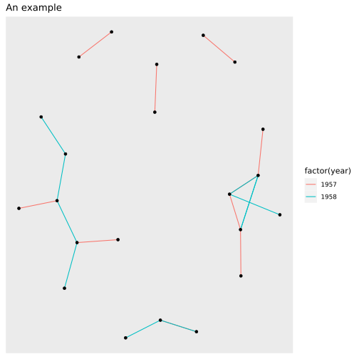

R interface for GraphFrames
Highlights
- Support for GraphFrames which aims to provide the functionality of GraphX.
- Perform graph algorithms like: PageRank, ShortestPaths and many others.
- Designed to work with sparklyr and the sparklyr extensions.
Installation
To install from CRAN, run:
install.packages("graphframes")For the development version, run:
devtools::install_github("rstudio/graphframes")Examples
The examples make use of the highschool dataset from the ggplot package.
Create a GraphFrame
The base for graph analyses in Spark, using sparklyr, will be a GraphFrame.
Open a new Spark connection using sparklyr, and copy the highschool data set
library(graphframes)
library(sparklyr)
library(dplyr)
sc <- spark_connect(master = "local", version = "2.1.0")
highschool_tbl <- copy_to(sc, ggraph::highschool, "highschool")
head(highschool_tbl)## # Source: spark<?> [?? x 3]
## from to year
## <dbl> <dbl> <dbl>
## 1 1 14 1957
## 2 1 15 1957
## 3 1 21 1957
## 4 1 54 1957
## 5 1 55 1957
## 6 2 21 1957The vertices table is be constructed using dplyr. The variable name expected by the GraphFrame is id.
from_tbl <- highschool_tbl %>%
distinct(from) %>%
transmute(id = from)
to_tbl <- highschool_tbl %>%
distinct(to) %>%
transmute(id = to)
vertices_tbl <- from_tbl %>%
sdf_bind_rows(to_tbl)
head(vertices_tbl)## # Source: spark<?> [?? x 1]
## id
## <dbl>
## 1 1
## 2 3
## 3 4
## 4 6
## 5 7
## 6 12The edges table can also be created using dplyr. In order for the GraphFrame to work, the from variable needs be renamed src, and the to variable dst.
# Create a table with <source, destination> edges
edges_tbl <- highschool_tbl %>%
transmute(src = from, dst = to)The gf_graphframe() function creates a new GraphFrame
gf_graphframe(vertices_tbl, edges_tbl)## GraphFrame
## Vertices:
## Database: spark_connection
## $ id <dbl> 1, 3, 4, 6, 7, 12, 13, 14, 16, 17, 19, 20, 22, 27, 31, 32, 33, 35,…
## Edges:
## Database: spark_connection
## $ src <dbl> 1, 1, 1, 1, 1, 2, 2, 3, 3, 4, 4, 4, 4, 5, 5, 6, 6, 6, 7, 8, 8, 9,…
## $ dst <dbl> 14, 15, 21, 54, 55, 21, 22, 9, 15, 5, 18, 19, 43, 19, 43, 13, 20,…Basic Page Rank
We will calculate PageRank over this dataset. The gf_graphframe() command can easily be piped into the gf_pagerank() function to execute the Page Rank.
gf_graphframe(vertices_tbl, edges_tbl) %>%
gf_pagerank(reset_prob = 0.15, max_iter = 10L, source_id = "1")## GraphFrame
## Vertices:
## Database: spark_connection
## $ id <dbl> 4, 4, 7, 7, 12, 12, 16, 16, 22, 22, 31, 31, 32, 32, 33, 33, …
## $ pagerank <dbl> 8.568153e-04, 8.568153e-04, 3.609726e-04, 3.609726e-04, 1.21…
## Edges:
## Database: spark_connection
## $ src <dbl> 1, 1, 1, 1, 1, 1, 1, 1, 1, 1, 1, 1, 1, 1, 1, 1, 1, 1, 1, 1, 1,…
## $ dst <dbl> 22, 22, 22, 22, 22, 22, 22, 22, 22, 22, 22, 22, 22, 22, 22, 22…
## $ weight <dbl> 0.03125, 0.03125, 0.03125, 0.03125, 0.03125, 0.03125, 0.03125,…Additionaly, one can calculate the degrees of vertices using gf_degrees as follows:
gf_graphframe(vertices_tbl, edges_tbl) %>%
gf_degrees()## # Source: spark<?> [?? x 2]
## id degree
## <dbl> <int>
## 1 1 10
## 2 14 7
## 3 54 23
## 4 55 25
## 5 22 30
## 6 3 2
## 7 4 13
## 8 19 20
## 9 6 10
## 10 13 16
## # … with more rowsVisualizations
In order to visualize large graphframes, one can use sample_n and then use ggraph with igraph to visualize the graph as follows:
library(ggraph)
library(igraph)
graph <- highschool_tbl %>%
sample_n(20) %>%
collect() %>%
graph_from_data_frame()
ggraph(graph, layout = 'kk') +
geom_edge_link(aes(colour = factor(year))) +
geom_node_point() +
ggtitle('An example')
Additional functions
Apart from calculating PageRank using gf_pagerank, the following functions are available:
gf_bfs(): Breadth-first search (BFS).gf_connected_components(): Connected components.gf_shortest_paths(): Shortest paths algorithm.gf_scc(): Strongly connected components.gf_triangle_count: Computes the number of triangles passing through each vertex and others.